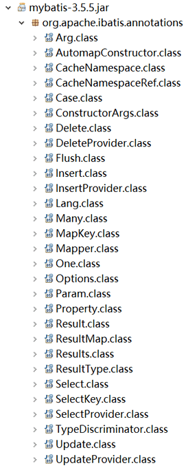

MyBatis注解（3种类型）
为了简化 XML 的配置，MyBatis 提供了注解。我们可以通过 MyBatis 的 jar 包查看注解，如下图所示。
声明结果集映射关系代码：
可使用 @ResultMap 来引用映射结果集，其中 value 可省略。

以上注解主要分为三大类，即 SQL 语句映射、结果集映射和关系映射。下面分别进行讲解。
1. SQL 语句映射
1）@Insert：实现新增功能
@Insert("insert into user(id,name) values(#{id},#{name})")
public int insert(User user);
2）@Select：实现查询功能
@Select("Select * from user")
@Results({
@Result(id = true, column = "id", property = "id"),
@Result(column = "name", property = "name"),
@Result(column = "sex", property = "sex"),
@Result(column = "age", property = "age")
})
List<User> queryAllUser();
3）@SelectKey：插入后，获取id的值
以 MySQL 为例，MySQL 在插入一条数据后，使用 select last_insert_id() 可以获取到自增 id 的值。
@Insert("insert into user(id,name) values(#{id},#{name})")
@SelectKey(statement = "select last_insert_id()", keyProperty = "id", keyColumn = "id", resultType = int,before = false)
public int insert(User user);
@SelectKey 各个属性含义如下。
- statement：表示要运行的 SQL 语句；
- keyProperty：可选项，表示将查询结果赋值给代码中的哪个对象；
- keyColumn：可选项，表示将查询结果赋值给数据表中的哪一列；
- resultType：指定 SQL 语句的返回值；
- before：默认值为 true，在执行插入语句之前，执行 select last_insert_id()。值为 flase，则在执行插入语句之后，执行 select last_insert_id()。
4）@Insert：实现插入功能
@Insert("insert into user(name,sex,age) values(#{name},#{sex},#{age}")
int saveUser(User user);
5）@Update：实现更新功能
@Update("update user set name= #{name},sex = #{sex},age =#{age} where id = #{id}")
void updateUserById(User user);
6）@Delete：实现删除功能
@Delete("delete from user where id =#{id}")
void deleteById(Integer id);
7）@Param：映射多个参数
@Param 用于在 Mapper 接口中映射多个参数。
int saveUser(@Param(value="user") User user,@Param("name") String name,@Param("age") Int age);
@Param 中的 value 属性可省略，用于指定参数的别名。2. 结果集映射
@Result、@Results、@ResultMap 是结果集映射的三大注解。声明结果集映射关系代码：
@Select({"select id, name, class_id from student"})
@Results(id="studentMap", value={
@Result(column="id", property="id", jdbcType=JdbcType.INTEGER, id=true),
@Result(column="name", property="name", jdbcType=JdbcType.VARCHAR),
@Result(column="class_id ", property="classId", jdbcType=JdbcType.INTEGER)
})
List<Student> selectAll();
下面为 @Results 各个属性的含义。
- id：表示当前结果集声明的唯一标识；
- value：表示结果集映射关系；
- @Result：代表一个字段的映射关系。其中，column 指定数据库字段的名称，property 指定实体类属性的名称，jdbcType 数据库字段类型，id 为 true 表示主键，默认 false。
可使用 @ResultMap 来引用映射结果集，其中 value 可省略。
@Select({"select id, name, class_id from student where id = #{id}"})
@ResultMap(value="studentMap")
Student selectById(Integer id);
这样不需要每次声明结果集映射时都复制冗余代码，简化开发，提高了代码的复用性。3. 关系映射
1）@one：用于一对一关系映射
@Select("select * from student")
@Results({
@Result(id=true,property="id",column="id"),
@Result(property="name",column="name"),
@Result(property="age",column="age"),
@Result(property="address",column="address_id",one=@One(select="net.biancheng.mapper.AddressMapper.getAddress"))
})
public List<Student> getAllStudents();
2）@many：用于一对多关系映射
@Select("select * from t_class where id=#{id}")
@Results({
@Result(id=true,column="id",property="id"),
@Result(column="class_name",property="className"),
@Result(property="students", column="id", many=@Many(select="net.biancheng.mapper.StudentMapper.getStudentsByClassId"))
})
public Class getClass(int id);
关注公众号「站长严长生」，在手机上阅读所有教程，随时随地都能学习。内含一款搜索神器，免费下载全网书籍和视频。

微信扫码关注公众号